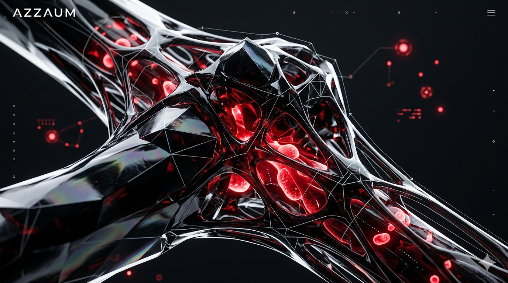

The First Peoples
Before the stone was carved, he calculated the movement of the stars through a mind that sees the world as mathematical patterns.

Before the stone was carved, he calculated the movement of the stars through a mind that sees the world as mathematical patterns.